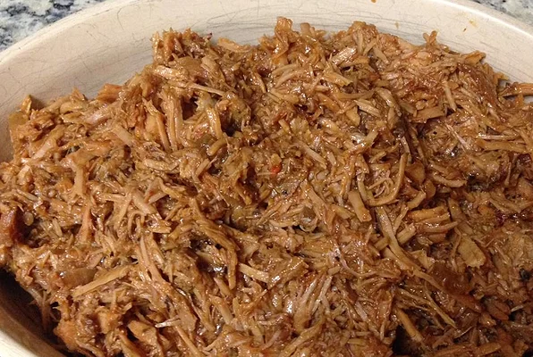

Pulled Pork

Description
This is a slow cooked pulled pork recipe that is sure
to interest anyone who likes a little heat in their meals.
Following this recipe will result in a delicious bbq pulled
pork with a nice smoky heat!
Ingredients
- 3.5lb boneless pork roast
- BBQ Sauce
- Apple Cider vinegar
- Crushed Garlic
- Curry powder
- Crushed red peppers
- Buns
Steps
- Pour 150mL BBQ sauce and 100mL Apple Cider Vinegar in measuring cup
- Whisk the wet ingredients
- Place the pork roast in the slow cooker
- Pour the ingredients in the measuring cup over the roast
- Add your desired amount of curry powder, crushed garlic and red peppers
- Let the roast cook on low for 10 hours
- Serve with buns for a delicious dinner!